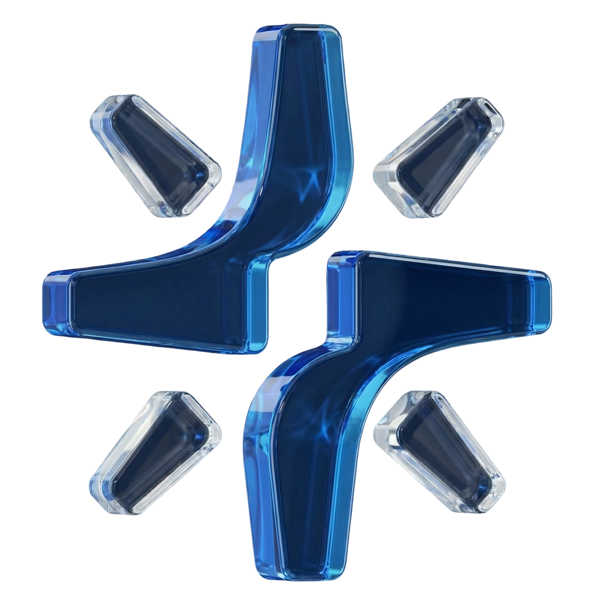
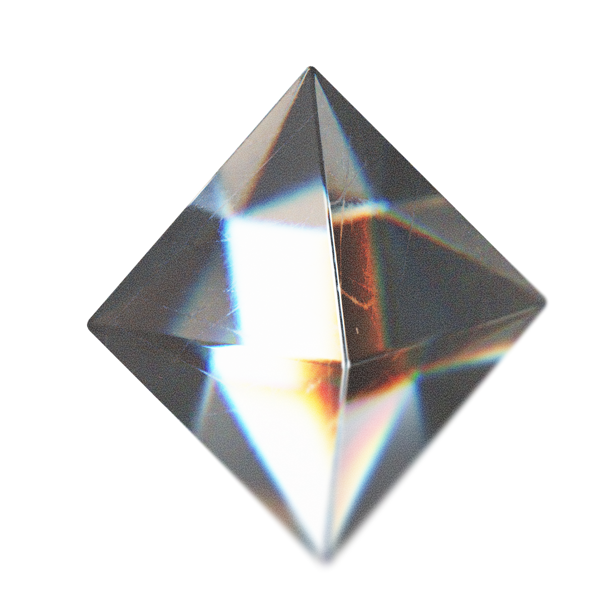
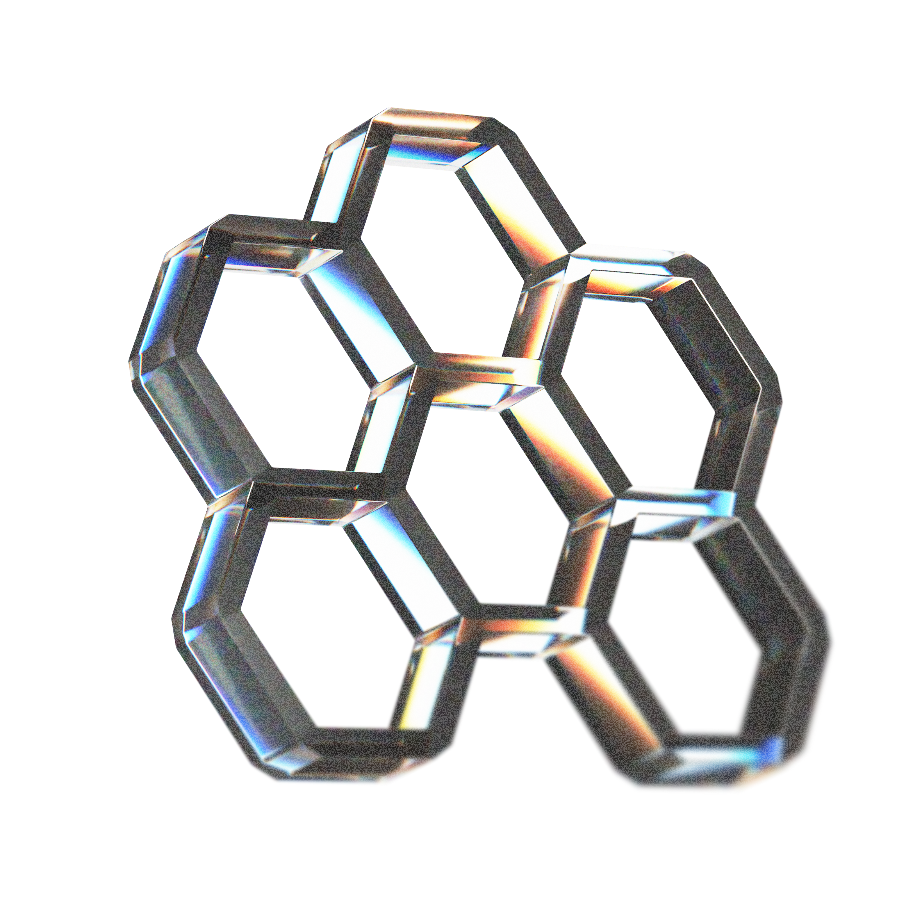
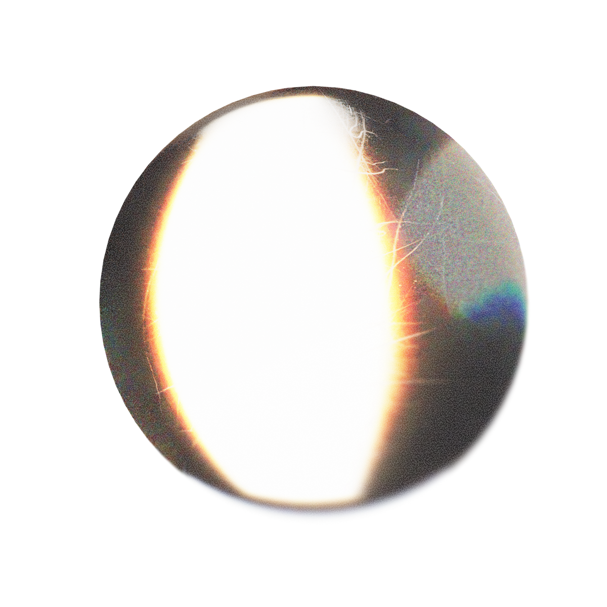
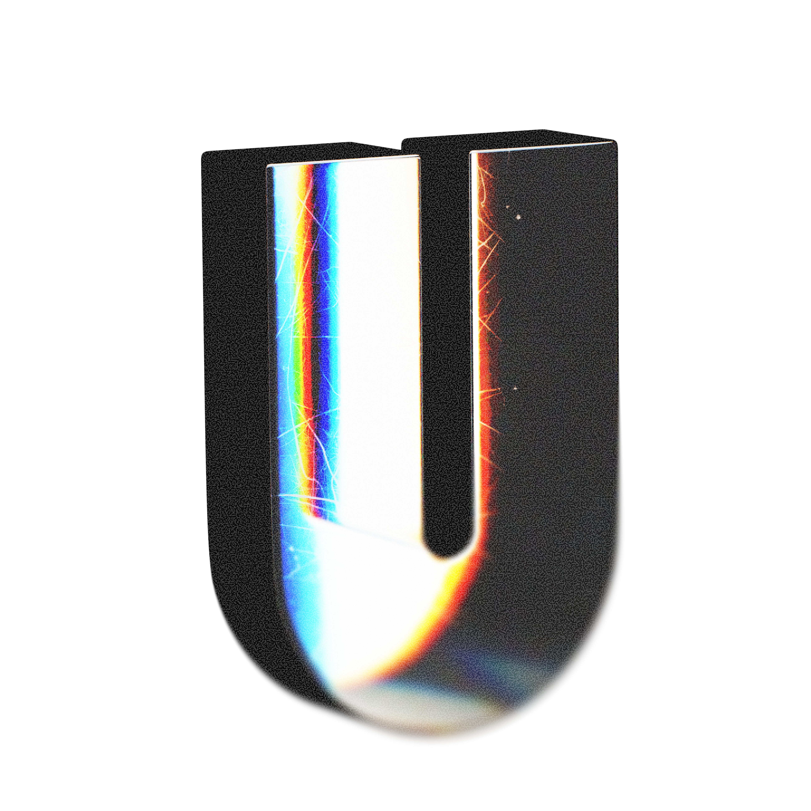
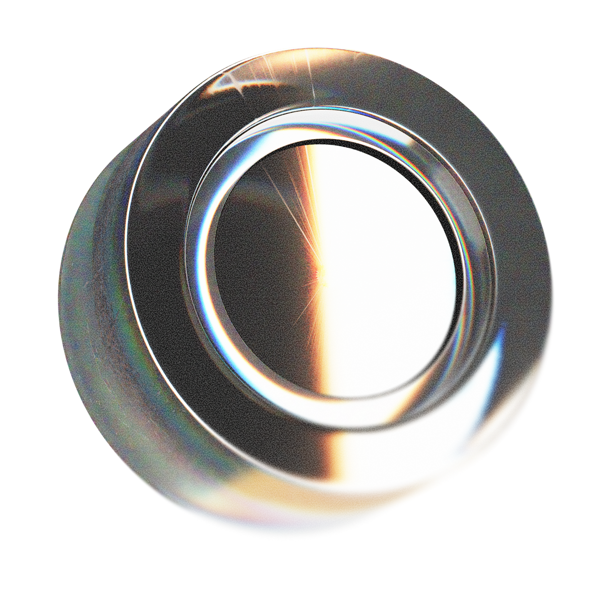
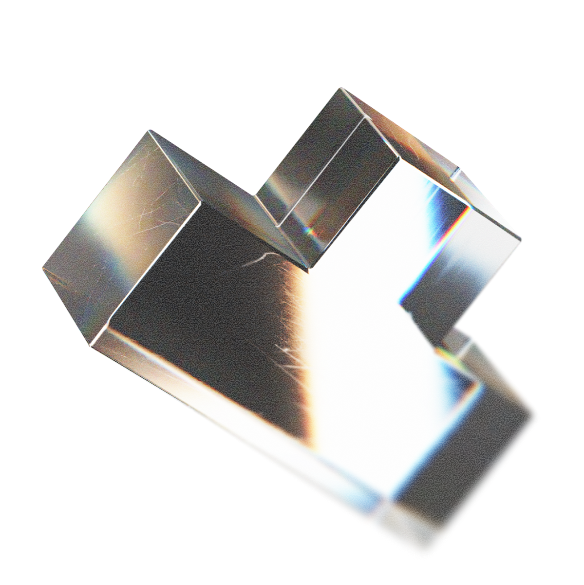
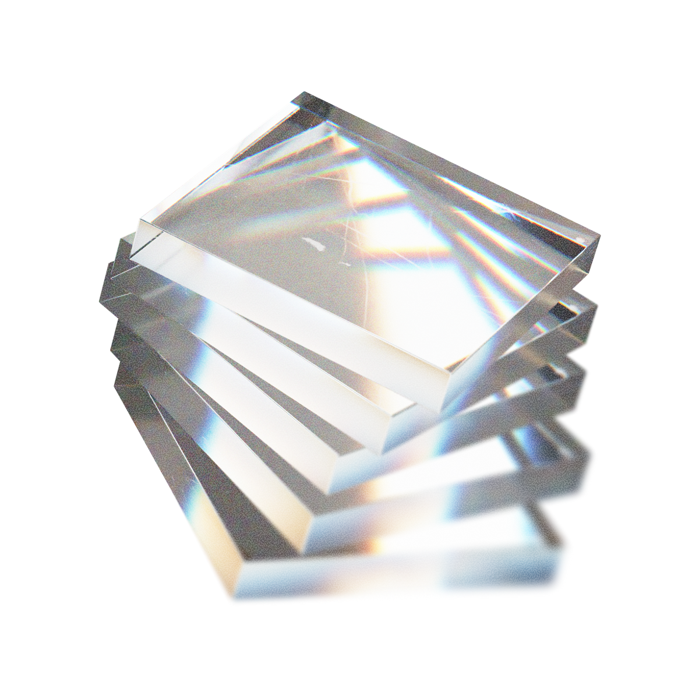
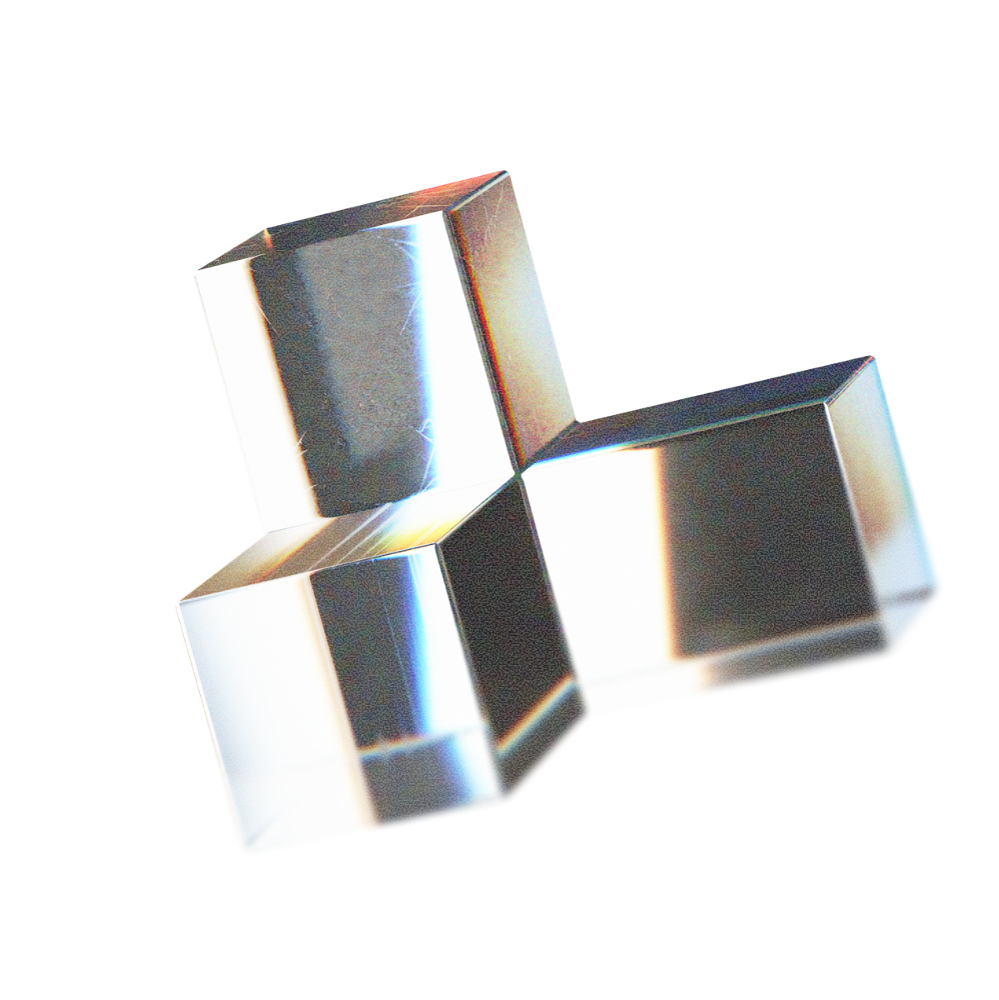
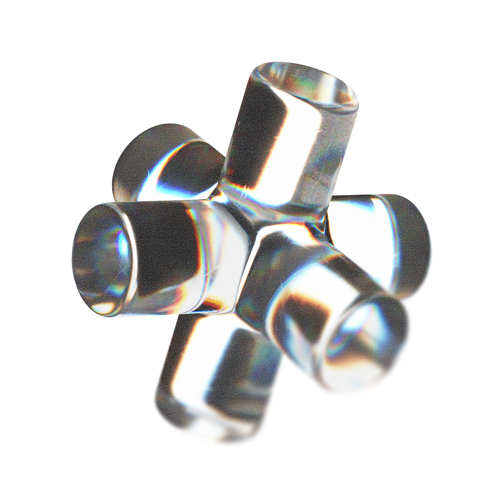

As fundações invisíveis
São os menores blocos do sistema — variáveis brutas sem contexto de uso, que sustentam todos os componentes acima. Clique em qualquer chip de cor para copiar o HEX automaticamente para a área de transferência.
Paleta de cores
4 cores de marca + branco. Núcleo Azul é a primária; Marinho a base; Esmeralda e Violeta acentos. Clique para copiar o HEX.
Cores de marca
Imutáveis · uso direto
Escala do Núcleo
Hover · estados · backgrounds
Escala do Marinho
Texto · superfícies · bordas
Cores semânticas
Estados · feedback · sistema
Gradientes oficiais
Apenas backgrounds e destaques
Como usar no código
Sempre use as CSS custom properties — nunca hardcode HEX direto. Assim o tema light/dark aplica automaticamente.
Tipografia
Fonte única Sora (Google Fonts) · 7 pesos disponíveis ·
escala responsiva via clamp() — ajusta automaticamente entre 320px e 1440px.
Escala H1–H6 + parágrafos
Clique para copiar o seletor
A revolução do relacionamento IA
Confiabilidade operacional
Inteligência integrada
Simplicidade operável
Ecossistema conectável
CATEGORIA · MÓDULO
A Fortics integra mensageria, voz e automação em uma infraestrutura única — com IA dentro dos fluxos.
Texto base de parágrafos, descrições de cards e conteúdo geral. Lê confortavelmente em larguras de até 70ch.
Texto secundário, descrições curtas, metadados. Pode usar peso semibold para hierarquia interna.
Legenda · timestamp · descrição auxiliar (12px)
Como usar
Hierarquia natural via tags HTML
Espaçamento
Sistema baseado em 4px com 13 níveis. Use as variáveis --fds-space-* para padding, margin e gap.
Border radius
7 níveis · do XS (4px) ao Full (pílula). Use --fds-radius-md como default para cards e inputs.
Elevação
5 sombras + 3 glow coloridos. As sombras se adaptam automaticamente ao tema (light/dark).
Motion
Durations + easings padronizados. A biblioteca FDS.animate usa estes mesmos valores via Motion One.
Durations
Easings
O quadradinho azul roda a curva em loop
Regras de aplicação da marca
O símbolo Spark + wordmark Fortics. Tamanho mínimo digital: 100px (horizontal), 40px (só símbolo).
Logotipos


Ícones de marca
Patterns oficiais
Símbolo 3D
Render PNG · uso em destaques

Shapes — formas auxiliares
10 PNGs decorativos · use como adorno de fundo










Do's & Don'ts
- Respeite a margem de segurança igual ao tamanho do prisma do símbolo
- Use contraste excelente (Branco sobre Marinho/Núcleo/Violeta · Marinho sobre Esmeralda)
- Use apenas as cores oficiais do brandbook
- Use SVG quando possível — escalável e nítido
- Distorcer, esticar ou rotacionar o logo
- Aplicar outline, sombra ou transparência
- Usar cores fora do brandbook
- Posicionar o logo entre dois elementos distintos
- Usar abaixo do tamanho mínimo de 100px
Como usar no código